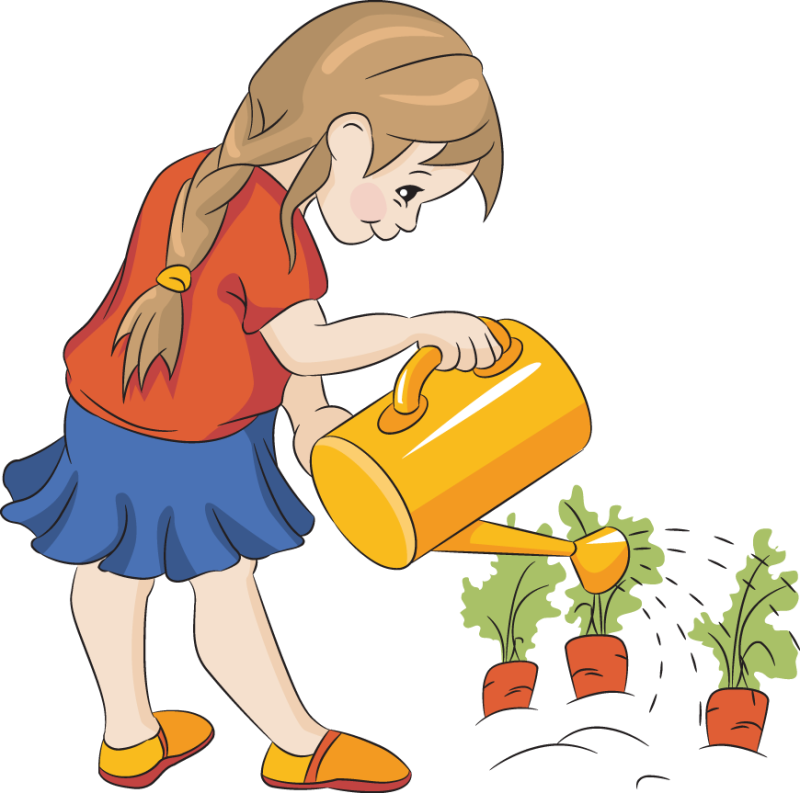

SMART FARMS
The lesson I have thoroughly learnt, and wish to pass on to others, is to know the enduring happiness that the love of a garden gives.
 Watch videos
Watch videos



SMART FARMS
The lesson I have thoroughly learnt, and wish to pass on to others, is to know the enduring happiness that the love of a garden gives.
Watch videos
The glory of gardening: hands in the dirt, head in the sun, heart with nature. To nurture a garden is to feed not just the body, but the soul.
Devil’s Ivy.Otherwise known as pothos or golden pothos, devil's ivy is an easy to grow indoor houseplant that will fight off common household toxins. It adds instant colour to any room with cascading tendrils and grows well in water, pots and hanging baskets.